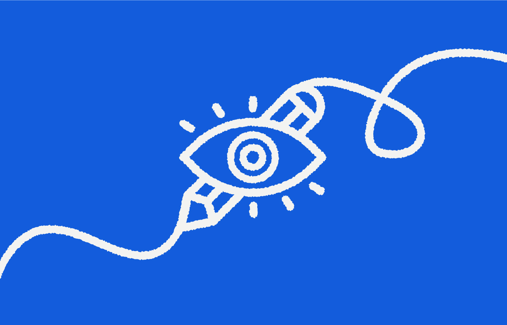

Le design est souvent associé à la créativité, à l'esthétique ou encore à l'expression artistique. Pourtant, réduire le design à une forme d'art est une erreur. Bien qu'ils partagent certains outils et une même sensibilité visuelle, le design et l'art poursuivent des objectifs très différents.En tant que designer, je ne crée pas uniquement pour produire quelque chose de beau. Je crée pour transmettre un message, résoudre un problème et aider une marque à communiquer plus efficacement.C'est cette différence qui fait toute la richesse du design.
L'art est une forme d'expression personnelle. Un artiste peut créer une œuvre pour partager une émotion, raconter une histoire ou provoquer une réflexion. Son travail n'a pas forcément besoin d'être compris de tous. Le design, lui, répond à une intention précise. Lorsqu'une entreprise fait appel à un designer, elle ne lui demande pas simplement de créer quelque chose d'esthétique. Elle attend un résultat capable de répondre à une problématique : attirer de nouveaux clients ; inspirer confiance ; améliorer une expérience utilisateur ; rendre une information plus claire ; renforcer son identité. Le design possède donc un objectif concret : communiquer.
ans le monde du design, une idée reçue revient souvent : « Si c'est beau, alors c'est réussi. » En réalité, un design peut être magnifique tout en étant inefficace. Prenons l'exemple d'un site web. Des animations spectaculaires, des effets visuels impressionnants et une interface sophistiquée peuvent attirer l'attention. Mais si le visiteur ne trouve pas rapidement les informations qu'il cherche ou ne comprend pas comment contacter l'entreprise, le design a échoué. Un bon design ne se juge pas uniquement à son apparence. Il se mesure à sa capacité à atteindre un objectif.
L'une des plus grandes différences entre l'art et le design réside dans le destinataire. Un artiste crée avant tout une œuvre qui lui appartient. Un designer crée pour quelqu'un d'autre. Cela implique de comprendre : les besoins des utilisateurs ; les attentes des clients ; les contraintes techniques ; les objectifs commerciaux. Le design demande de l'empathie. Avant de dessiner une interface ou une identité visuelle, il faut comprendre les personnes qui vont l'utiliser. C'est pourquoi la phase de recherche est souvent plus importante que la phase de création.
Les meilleurs designs sont parfois ceux que l'on remarque le moins. Pourquoi ? Parce qu'ils fonctionnent naturellement. Un site clair. Une navigation intuitive. Une identité cohérente. Des informations faciles à comprendre. Lorsque tout semble évident, c'est souvent le signe qu'un important travail de conception a été réalisé en amont. Le bon design simplifie les choses. Il ne les complique jamais.
Le design et l'art partagent un langage visuel, mais leurs intentions sont différentes. L'art cherche à exprimer une vision. Le design cherche à transmettre un message. Créer une identité visuelle ou un site web ne consiste donc pas à accumuler des effets graphiques. Il s'agit de donner une forme claire à une idée, de guider un utilisateur et de construire une relation de confiance entre une marque et son public. C'est pourquoi le design est bien plus qu'une question d'esthétique. C'est un langage. Et lorsqu'il est bien utilisé, il devient l'un des outils de communication les plus puissants qu'une entreprise puisse posséder.
Elle communique aussi avec ses couleurs, ses formes, son site web et chaque détail de son identité visuelle. Si vous souhaitez construire une image de marque cohérente et une expérience digitale qui raconte réellement votre histoire, je serais ravi de vous accompagner dans cette aventure.
Travaillons ensemblePartage d'idées, de processus créatifs et de retours d'expérience sur l'univers du Brand & Digital Design.

Une identité visuelle ne se résume pas à un logo. C'est le premier langage d'une marque,...
Un site web est souvent le premier point de contact entre une entreprise et ses futurs clients...